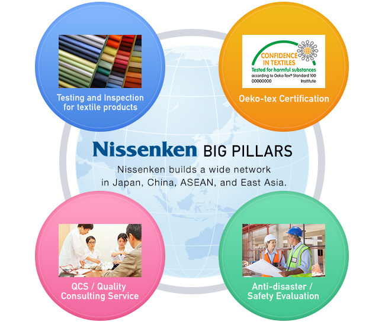

Home > Nissenken outline > Nissenken outline
| Company Name | Nissenken Quality Evaluation India Pvt. Ltd. |
|---|---|
| Establishment | November 17th, 2014 |
| Country Head Office and Testing Laboratory | F-209, Epip, Sitapura Industrial Area, Jaipur-302022, Rajasthan, INDIA TEL: +91-141-300-3680 EMAIL: jaipur@nissenken.or.jp |
| Delhi Branch Office | A2/178 , 1st floor, Safdarjung Enclave, New Delhi-110023 TEL: +91-11-4612-2821 EMAIL:delhi@nissenken.or.jp |
| Chennai Branch Office | Old No. 114, New No. 122, 15th Avenue, 100 Feet Road, Ashok Nagar, Chennai-83 TEL: Landline: +91-78068 77738 Email: chennai@nissenken.or.jp |
| International Sites | 【 Head office 】 | 【 Japan 】 ■Oeko-Tex Laboratory ■Tokyo Laboratory [ Kuramae Labo / Tateishi Labo / Nihonbashi Branch Office / Yoyogi Branch Office / Ryomou Branch Office ] ■Chubu Laboratory [ Testing Center / Tokai Branch Office / Hamamatsu Branch Office ] ■Kyoto Inspection House [ Testing Center ] ■Osaka Laboratory [ Testing Center / Honmachi Branch Office / Namba Branch Office ] ■Nishiwaki Inspection House [ Testing Center ] |
【 China 】 ■Shanghai Laboratory [ Testing center / Shanghai Mart Branch Office / Shaoxing Branch Office ] ■Nantong Laboratory [ Testing center / Garment Inspection Center / Fabric Inspection Center ] ■Nantong – Chong Chuan Laboratory [ Testing Center / Garment Inspection Center ] ■Nantong Renminru Laboratory [ Testing Center / Industrial Area Testing Center / Industrial Area Garment Inspection Center ] ■Rudong Inspection Center ■Yantai Laboratory [ Testing Center / Inspection Center / Qingdao Branch Office / Dalian Branch Office ] |
【 Indonesia 】 ■Solo Inspection Center |
【 Myanmar 】 ■Yangon Laboratory [ Inspection Center ] |
【 Bangladesh 】 ■Dhaka Laboratory [ Testing Center ] |
【 Cambodia 】 ■Phnom Penh Inspection Center For more information, please click「Business Sites」 |
| Main Work | ■Fabric testing To test fundamental properties of fabrics like color fastness, strength, dimensional change, fiber mixture, etc. ■Textile product testing To test textile product like garments and sundries. Appearance, sewing testing, care label information confirmation, dimensional change, surface appearance change, etc. ■Safety testing To test the harmful chemicals inside textile product like certain aromatic amine, formaldehyde, heavy metal, pH, etc. ■QCS / Quality consulting service To offer consulting service related to making care label such as to supply customers with advice and proposal for writing care labeling, improving appearance, sewing and quality of products, etc. ■Foreign standards To carry out testing in accordance with foreign standards like ISO (International Standard Organization), GB(China), ASTM, AATCC(America), etc. |
It has been more than 65 years since Nissenken was established in 1948 as inspection and testing institute for dyed and processed products. Nissenken was and will always be carrying out
all the testing and inspection on the impartial position, evaluating the added value and new materials produced to satisfy customers' diversified needs, and contributing to build healthier and more comfortable world.
In the year 2000, Nissenken joined the international testing and research institute [Oeko-tex international community] and became the only Oeko-tex standard 100 authorized certificating institute.
As the third party testing and inspection center with global way of thinking, Nissenken increased overseas’ investments to connect the consumers, products and manufactures with confidence worldwide.
In the year 2000, Nissenken joined the international testing and research institute [Oeko-tex international community] and became the only Oeko-tex standard 100 authorized certificating institute.
As the third party testing and inspection center with global way of thinking, Nissenken increased overseas’ investments to connect the consumers, products and manufactures with confidence worldwide.
As specialized institute committed in quality evaluation of materials and products related to textiles, Nissenken persistently insists on carrying out testing and inspection on basis of ensuring consumers' [Confidence, Safety, Health]. Below are 4 pillars of the third part testing and inspection institute.

| Carry out testing and inspection according to customers' needs and development. | The only institute in japan issuing Oeko-tex certification which can prove the safety of materials and products. |
| Support apparel makers with our sophisticated skills and technology to make products with high customer satisfaction. | Evaluate the [Anti-disaster / Safety] property of products which attracts high attention especially after the big earthquake. |
These 4 pillars ensures the confidence among consumers, products and manufactures at home and abroad.